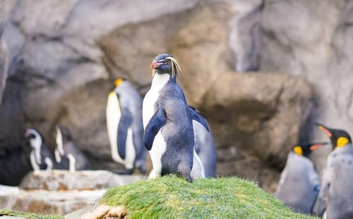
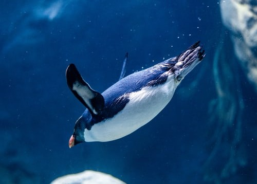

Their name comes from the distinctive yellow feathered crest on the penguins' heads that apparently resemble the feathers that featured on hats worn by men in the 18th century who were referred to as macaronis.

They live on mountains and snow covered rocky areas near the coast in Antarctica.

Like other penguins, they swallow small stones to use for ballast and to help grind up the shells of the small crustaceans they catch.